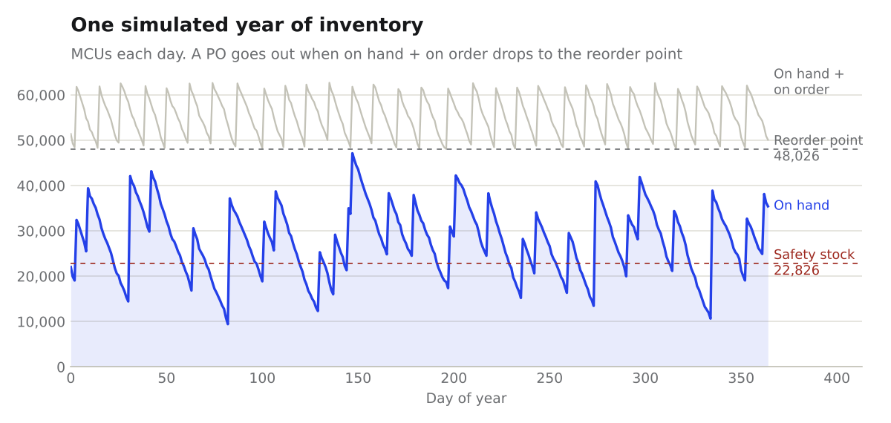
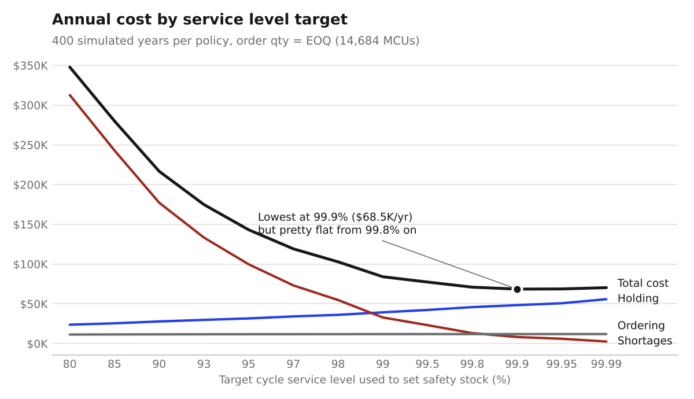
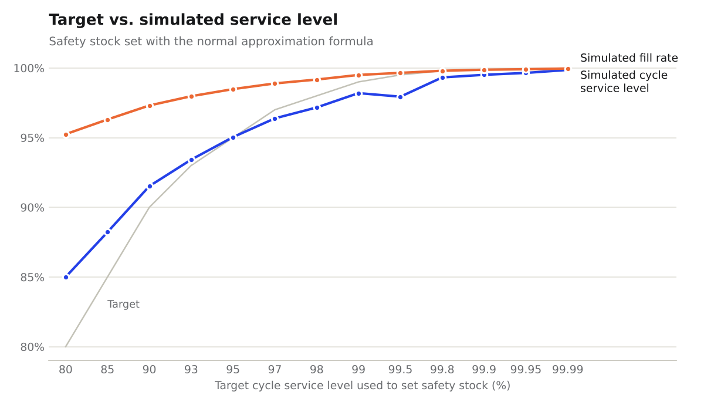
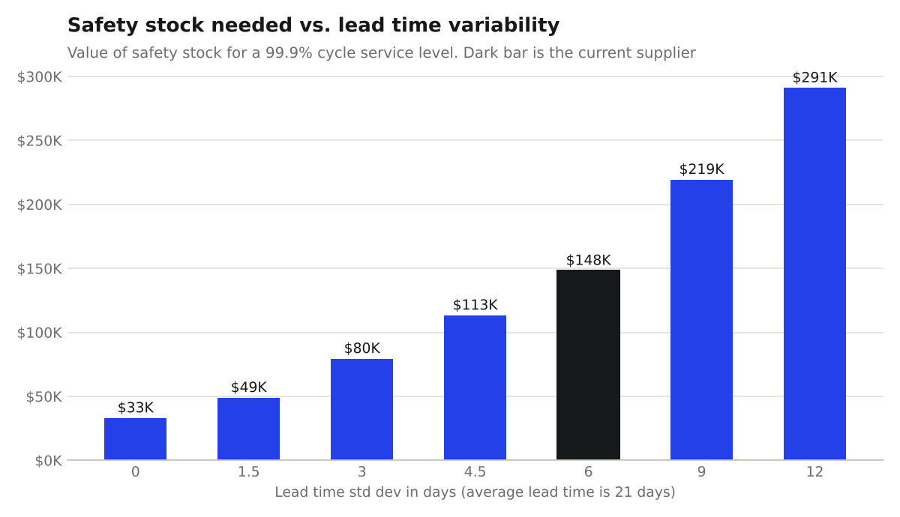
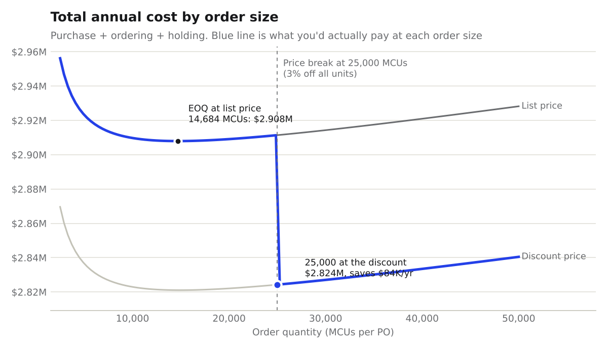

Python notebook, November 2026
Microcontroller Inventory Simulator
How many chips a plant should keep on hand when one distributor's deliveries are hard to predict, and what a more reliable distributor is worth.
The part and all numbers are made up for illustration. Built in Python with NumPy, pandas, SciPy and Matplotlib.
The setup
An industrial manufacturer buys a 32-bit microcontroller from one distributor for the control boards in its motor drives. How many chips the plant uses each day changes, how long the distributor takes to deliver changes, and if the plant runs out, the board line stops.
I wanted to figure out how many to keep on hand and how many to order at a time. Then I used that to answer two sourcing questions. How much is a more reliable supplier worth? And should the plant take a 3% discount for ordering 10 full reels at a time?
How it works
I started with the textbook approach: EOQ, plus safety stock that accounts for both demand and lead time moving around. Then I wrote a Monte Carlo simulation of a reorder point system to see how the textbook numbers hold up.
It runs 400 simulated years for each policy, with random daily demand and random lead times, and adds up what each policy actually costs in holding inventory, placing orders and lost production.

What I found
Most of the risk comes from the distributor's lead times. About 95% of the uncertainty the plant has to cover comes from deliveries showing up at different times, and only a small part comes from usage.
Because the chip only costs $6.50 and running out stops a build, the cheapest service level ended up very high, around 99.9%. Running at 95% instead costs about $74,600 more a year in shortages.
The textbook formula also promises more than it delivers, because late shipments are more common than early ones and a late PO holds up the one behind it. A 99.9% target only reached 99.5% in the simulation, which is about 5 times as many stockouts as planned.


What it means for sourcing
If the distributor cut their lead time variation from 6 days to 3, the plant could carry about $68,800 less safety stock and save about $23,000 a year. So a distributor who delivers like that is worth paying up to about 0.8% more per chip.

The 3% discount at 25,000 chips is also worth taking. It saves about $83,700 a year after the extra holding cost and adds about $32,500 of inventory on average, so the main thing I'd check first is that the part isn't heading toward end of life.

Notebook and code
- Microcontroller_Inventory_Simulator.ipynbJupyter notebook
- inventory_sim.pyRunning it rebuilds the charts
- requirements.txtPython packages